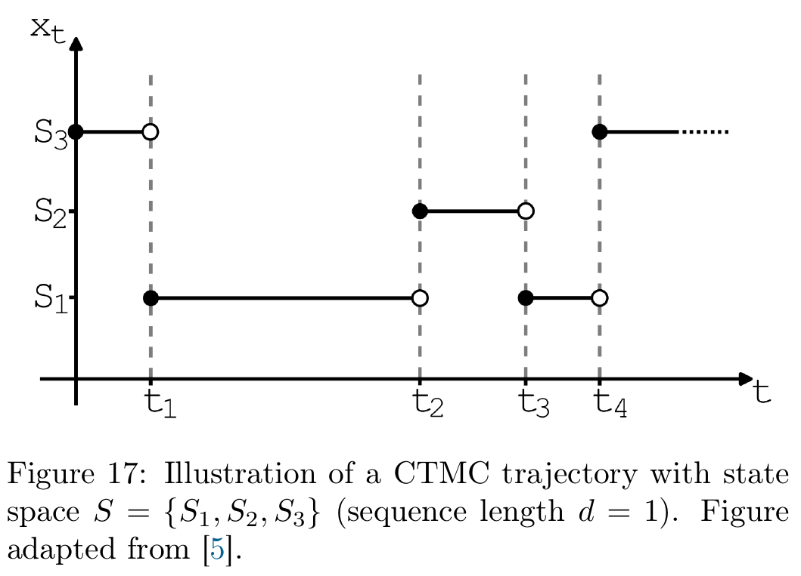
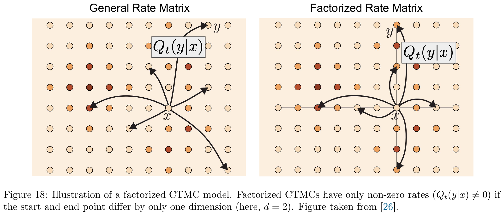
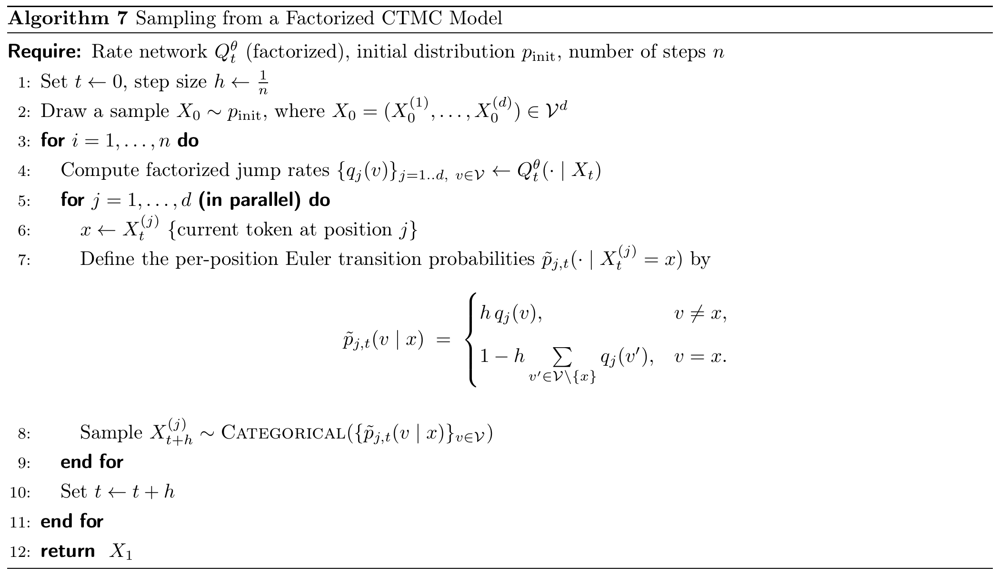
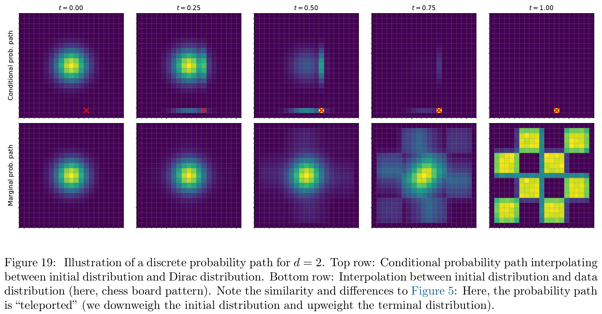
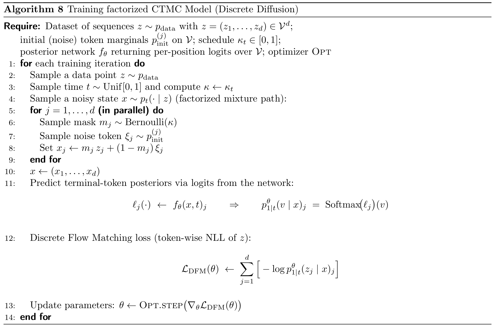
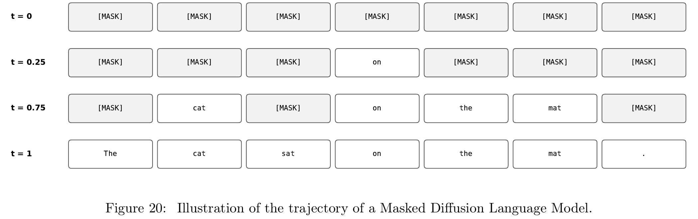

第 7 章 · 生成模型
Discrete Diffusion Models：从 CTMC 到扩散语言模型
前面几章讨论的图像和潜变量由连续数值组成，可以用速度场和 ODE/SDE 描述它们怎样变化。文本的生成对象则是一串离散 token：一个位置可以是“猫”，也可以是“狗”，却没有一个天然的“猫与狗之间的半个 token”。本章用连续时间马尔可夫链（Continuous-Time Markov Chain，CTMC）描述这种变化：时间连续推进，序列在某些时刻跳到另一条序列。
本章要走通的一条线：把完整文本看作离散状态 → 用跳跃速率规定怎样改词 → 构造从噪声到真实文本的概率路径 → 证明只要预测每个位置的干净 token 概率，就能得到需要的速率 → 用交叉熵训练，再逐步采样生成文本。所有核心解释、推导和手算都放在本页。
笔记对应讲义第 54–65 页及第 66 页开头的 Remark 40，保留原文公式（84）–（95）、图 17–20、算法 7–8 的对应关系。公式旁的展开推导和小型数值例子是阅读补充。本章沿用讲义的生成方向：t=0 是噪声端，t=1 是数据端；从完整文本构造训练噪声时，我们是在按指定时刻抽取中间状态。
先看完整任务：从一串空位生成一句话
贯穿本章的例子是三 token 文本 z=[我,喜欢,猫]。为了讲清算法，暂把这些词各当作一个 token；实际分词器可能把一个词拆成多个 token。假设用特殊符号 [MASK] 表示未知位置，一次可能的生成过程是：
时间 0.00 [MASK] [MASK] [MASK]
时间 0.30 我 [MASK] [MASK]
时间 0.65 我 [MASK] 猫
时间 1.00 我 喜欢 猫生成时没有一份预先指定的“我喜欢猫”等待复原。网络根据当前部分完成的序列预测可能的完整文本，采样决定这一次生成哪一种。训练时则恰好相反：我们已经知道完整句子 z，可以人为遮住或替换部分 token，再要求网络猜出原来的 token。
这个例子也提出了本章的两个问题：什么时候更新、每次更新成什么？CTMC 的速率控制更新发生的快慢；神经网络预测的干净 token 概率，帮助决定更新的内容。为理解这两者，先建立 CTMC。
| 符号 | 本章的含义 | 例子或形状 |
|---|---|---|
| V,V | 词表及其中 token 的数量 | 教学词表可取“我、你、喜欢、猫、狗、[MASK]”，V=6 |
| d | 序列长度 | 贯穿例子取 d=3，不是 Transformer 的隐藏宽度 |
| S=Vd | 所有长度为 d 的序列组成的状态空间 | 例子有 63=216 个可能状态 |
| z | 干净训练序列 | [我,喜欢,猫] |
| Xt,x | 时刻 t 的随机序列，及其一个具体取值 | x=[我,[MASK],猫] |
| y | 可能跳到的另一条序列 | 本章 Qt(y∣x) 中的 y 是目标状态；不再沿用第 5 章“提示词”的角色 |
| pt(x) | 时刻 t 恰好处于序列 x 的概率 | 离散概率质量，满足 ∑xpt(x)=1 |
7.1 Continuous-Time Markov Chain Models：用跳跃描述离散生成
状态离散、时间连续，分别是什么意思？
“离散”描述的是状态：Xt 每次取值都是一条由词表 token 组成的序列。状态空间也包含不通顺的序列，数据分布才区分哪些更像真实语言。“连续时间”描述的是时间轴：t 可以是 0.2、0.201 或 0.20137，跳跃不必只发生在整数时刻。一条样本轨迹通常在一段时间内保持不变，到某一时刻突然改变，然后继续保持。

图 17 的横轴是连续时间，纵轴只有 S1,S2,S3 三种状态。水平段表示这次样本没有跳跃，竖直变化表示状态切换；在跳跃时刻，实心点表示采用的新值，空心点标出离开的旧值。一条样本轨迹会突然跳跃，而许多样本形成的状态概率仍可以随时间平滑变化。后面 KFE 描述的是这些概率的变化，不是对图中阶梯轨迹逐点求普通导数。
Markov 性是说：给定当前完整状态后，预测下一状态不需要再知道更早的历史：
Pr(Xt+h=y∣Xt=x,更早的状态)=Pr(Xt+h=y∣Xt=x).
这里的“当前状态”包含整条当前序列。因此网络可以读取当前句子的所有位置，利用上下文；Markov 性不要求只看一个词，也不要求忽略句子前后文。它限制的是对这条随机过程过去轨迹的依赖。
token 在网络内部仍然可以经过连续的 embedding 和 Transformer 计算。连续的特征计算与离散的生成状态并不冲突：网络输出概率或速率，采样后得到的状态仍是一条离散 token 序列。本章采用跳过程来描述状态演化；“离散扩散”这一名称不表示把布朗运动直接加到 token ID 上。
速率矩阵：先规定单位时间内怎样跳
连续模型用速度场决定怎样移动。离散状态没有同样的移动方向，这里改用速率矩阵：
Q:S×S×[0,1]→R,(y,x,t)↦Qt(y∣x).(84)
Qt(y∣x) 表示当前在 x 时，跳向 y 的瞬时速率。对不同状态，要求：
Qt(y∣x)≥0(y=x).(85)
对角元则定义为所有离开速率之和的负值：
Qt(x∣x)=−y=x∑Qt(y∣x).(86)
例如，从状态 a 跳到 b 的速率为 2，跳到 c 的速率为 1，总离开速率就是 3；对角元为 −3。速率不是概率，速率可以大于 1，负对角元也不是负概率。它记录的是留在当前状态的概率在瞬间下降得多快。
下面用三个状态的矩阵说明排列方向。本文固定行是目标状态，列是当前来源状态：
Q=−3211−3204−4,行、列顺序均为 (a,b,c).
读取第一列，就是“从 a 出发”：去 b 的速率为 2，去 c 的速率为 1，对角元为 −3。每一列的和都是零。这一约定决定后面的概率向量用列向量，KFE 写成 p˙t=Qtpt；使用行向量的其他资料可能会把矩阵整体转置。
速率的严格定义，是转移概率在极短时间上的变化率：
∂h∂Pr(Xt+h=y∣Xt=x)h=0+=Qt(y∣x).(87)
因此，在很短的时间 h 内：
Pr(Xt+h=y∣Xt=x)=1y=x+hQt(y∣x)+o(h).
1y=x 表示：时间还没有推进时，只可能处于原状态。速率乘上很短的时间，才近似得到跳跃概率。在上面的 a 状态，取 h=0.1，Euler 近似给出“仍在 a、到 b、到 c”的概率 [0.7,0.2,0.1]。它们非负且和为 1。
Theorem 33 的意义：有限状态空间上，给定有界、关于时间连续的合法速率矩阵和初始分布，就确定了一组唯一的 CTMC 转移概率。这里的“唯一”是随机过程分布的唯一性；同一模型采样两次，轨迹仍然可以不同。后面使用的速率可能在 t→1 发散，届时应在 t<1 的区间使用这些结论，并单独处理终点。
Example 34：两个状态为什么会逐渐忘记起点？
设状态只有 a、b，双向跳跃速率都为 λ>0：
Q=[−λλλ−λ].
如果从 a 开始，把经过时间 h 后仍在 a 的概率记为 r(h)，那么在 a 的概率流出速度为 λr，从 b 流回的速度为 λ(1−r)。因此：
r′(h)=−λr(h)+λ(1−r(h))=λ−2λr(h),r(0)=1.
将 u=r−21 代入，有 u′=−2λu，所以：
Pr(Xt+h=a∣Xt=a)=21+e−2λh,Pr(Xt+h=b∣Xt=a)=21−e−2λh.
完整转移矩阵为：
P(h)=21[1+e−2λh1−e−2λh1−e−2λh1+e−2λh].
当 h→∞，两种状态的概率都趋于 1/2，起点的影响逐渐消失。当 h 很小时，用 e−2λh≈1−2λh，跳到另一状态的概率约为 λh，正好对应速率定义。
例如 λ=2,h=0.1，精确切换概率约为 0.1648，Euler 近似为 0.2。误差来自有限时间里可能发生多次跳跃。也要区分“最后仍在 a”和“期间从未离开 a”：过程可能先跳到 b 再跳回 a，前者包括这种情况；在此常速率例子中，后者概率是 e−λh。
为什么整句的速率矩阵太大，怎样用因子化处理？
长度为 d、词表大小为 V 的序列共有 Vd 个状态。如果对当前序列 x，网络要输出跳到每一种完整序列的速率，一次就要输出 Vd 个数。词表和句子稍大，就无法实现。
本章采用的限制是：CTMC 的一次瞬时跳跃，至多改变一个位置的 token。如果 y 与 x 在两个或更多位置不同，就设置 Qt(y∣x)=0。网络只需输出“每个位置换成词表中各 token 的速率”：
qt,j(v∣x),j=1,…,d,v∈V.
这张输出表的形状为 d×V。三位置、六 token 的例子只需 18 个数；若 d=128,V=50,000，输出量是 640 万，而非 50,000128。这里解决的是输出随长度指数增长的问题，大词表本身仍有计算成本。

图中网格的两个方向表示两个位置。一般速率可以连接任意两个格子；因子化速率只保留相差一个坐标的连接。它限制的是一次跳跃能连接哪些状态。
具体地，若 y 只把 x 的第 j 位从 xj 改成 v，则 Qt(y∣x)=qt,j(v∣x)。每个位置的对角项以及整句对角项分别为：
qt,j(xj∣x)=−v=xj∑qt,j(v∣x),Qt(x∣x)=j=1∑dqt,j(xj∣x).
因子化速率不等于词与词互相独立。qt,j(v∣x) 的输入是整句 x，网络可以读取所有位置，再决定第 j 位的速率。比如其他位置已经出现“我”和“猫”，中间位置的预测可以因此改变。被稀疏化的是瞬时状态转移图，而非语言的上下文关系。
Algorithm 7：速率怎样变成一次实际更新？
对完整状态，最简单的一阶 Euler 采样近似为：
Xt+h∼pt+h∣t(⋅∣x),pt+h∣t(y∣x)=1y=x+hQt(y∣x).(88)
为使它是合法概率，需保证 h∑y=xQt(y∣x)≤1。否则留在 x 的概率会成为负数。速率很大时，步长必须相应减小。
Algorithm 7 使用更方便并行实现的逐位置版本。先根据同一份旧序列 x，计算所有位置的速率。对每个位置 j，令 λt,j(x)=∑v=xjqt,j(v∣x)，然后按下面的分类分布采样：
pj(v∣x)={hqt,j(v∣x),1−hλt,j(x),v=xj,v=xj.
这里是按概率随机抽取 token，不是每次都取最大概率的词。抽样完成后，再同时提交各位置的新值，时间前进 h。逐位置版本要求每个位置满足 hλt,j(x)≤1；完整状态 Euler 所需的是所有位置总离开速率的约束，两者不要混淆。

“每次只改一个位置”与“各位置并行更新”看起来矛盾，其实说的是两个层次：CTMC 的一次精确跳跃只改一个位置；数值算法跨过有限时间 h，可能一次改变多个位置。按旧状态独立抽样时，两处同时改变的概率含 h2λiλj，属于二阶量，因此它与完整状态的一阶 Euler 转移在一阶上相符。
这只是小步近似。步长粗、剩余未知位置多时，多个位置同时按各自边缘分布独立抽样，可能损失它们的联合相关性；并行能力本身不保证采样无误差。后面会把这个通用算法具体化为“逐步填入 [MASK]”。
7.2 Training CTMC Models：把跳跃模型化为分类学习
现在有了“怎样按速率生成”的工具，还不知道速率应该取多少。训练目标是找到 Qtθ，使初始分布中的序列经过演化，到终点服从真实文本分布：
X0XtLaw(X1)∼pinit, 按 Qtθ 演化,≈pdata.
Law(X1) 表示生成终点的概率分布。我们并不知道真实分布的完整概率表，只能从训练集中读取样本。下面沿用连续 Flow Matching 的思路：先固定一条真实文本构造容易分析的条件路径，再把这些条件路径组合起来。
7.2.1 Conditional and Marginal Probability Path：先定义中间文本怎样分布
固定一条干净文本 z。条件概率路径 pt(x∣z) 描述：如果目标文本是 z，在时刻 t 允许出现哪些中间状态 x，以及各有多大概率。它的两个端点是：
p0(⋅∣z)=pinit,p1(⋅∣z)=δz,δz(x)=1x=z.
起点不依赖这一次选中的 z；终点全部概率集中在 z。把所有训练文本对应的条件路径按数据分布混合，就得到边缘路径：
pt(x)=z∈S∑pt(x∣z)pdata(z),p0=pinit,p1=pdata.(89)
“条件”固定一条目标文本，“边缘”把可能的目标文本合并。它们都是分布随时间的描述，不是一条已抽出的生成轨迹。
Example 35：逐位置混合路径。假设起始分布可以按位置独立采样，即 pinit(x)=∏jpinit(j)(xj)。选一条连续可微的递增日程 κt，满足 κ0=0,κ1=1,κ˙t≥0，并在 t<1 时有 κt<1，以保证后文速率的分母有定义。定义：
pt(x∣z)=j=1∏d[(1−κt)pinit(j)(xj)+κt1xj=zj].
先看一个位置 j：以概率 κt 直接取干净 token zj，以概率 1−κt 从初始分布抽一个噪声 token。对所有位置各自这样抽样，就得到 x。最简单的日程是 κt=t，此时越接近 1，保留干净信息的概率越高。
实现时可以写成：
mj∼Bernoulli(κt),ξj∼pinit(j),xj={zj,ξj,mj=1,mj=0.
讲义用 xj=mjzj+(1−mj)ξj 简写这次选择。token 是离散符号，这个式子表示 if/else 选一个分支，不是在词义或 token ID 之间做连续插值。
对掩码初始分布，ξj 总是 [MASK]。例如 t=0.5，独立抽到 m=[1,0,1]，从 [我,喜欢,猫] 得到 [我,[MASK],猫]。若噪声分布改为普通词的均匀分布，噪声 token 也可能碰巧等于干净 token，因此 mj=0 不一定意味着这个位置的字面值错误。

图 19 的每个小面板都是一份概率分布快照。横纵坐标分别枚举两个 token 位置的取值，红色 × 标出固定目标 z；这里的二维网格不是连续 embedding 平面。上排固定一个终点，概率逐渐集中到该终点；下排混合许多终点，最终形成数据分布。格子的亮暗表示概率质量，不是一个 token 沿格子之间连续移动。
这里还有一个重要细节：d>1 时，逐位置混合再取乘积，通常不等于把两份整句分布简单混合。两位置展开就能看见：
pt(x∣z)=(1−κt)2r1r2+κt(1−κt)(s1r2+r1s2)+κt2s1s2,
其中 rj=pinit(j)(xj)，sj=1xj=zj。中间两项代表“只保留其中一个位置”的状态。所以不能把一般边缘路径直接写成 (1−κt)pinit+κtpdata。此外，固定 z 时各位置的加噪选择独立，不意味着混合不同文本后的 pt 也按位置独立。
7.2.2 Conditional and Marginal Rate Matrix：怎样让跳跃跟随指定路径？
只写出 pt(x∣z) 还没有规定怎样生成轨迹。我们需要构造条件速率 Qtz，使按它演化的 CTMC 在每个时刻恰好具有这份分布。它类似第 3 章中固定目标样本后的条件速度场。
先记：
ct=1−κtκ˙t,0≤t<1.
Example 37 给出的条件速率非常直接：某个位置如果还不是目标 token，就以速率 ct 跳向目标 token；如果已经是目标值，该位置不再改变。写成含局部对角元的统一表达式：
qt,jz(v∣x)=ct[1v=zj−1v=xj].
当 xj=zj，去 zj 的速率为 ct，当前值的对角项为 −ct，其余为零。当 xj=zj，两项抵消，整行都是零。注意这是已知目标 z 的条件过程；生成时并不知道 z，因此还不能直接用它。
为什么是 κ˙t/(1−κt)？先看一个位置，记其条件分布为：
rt(v)=(1−κt)pinit(v)+κt1v=z.
对时间求导并整理：
r˙t(v)=κ˙t[1v=z−pinit(v)]=1−κtκ˙t[1v=z−rt(v)]=ct[1v=z−rt(v)].
如果所有非目标状态以速率 ct 流向目标，非目标概率就按 −ctrt(v) 衰减，目标状态则接收所有这些流量，正好符合上式。多个位置的条件路径与条件速率都按位置分解，因此逐位置验证即可。
还可以从“剩余噪声比例”理解这个系数：需要消除的比例为 1−κt，当前消除速度为 κ˙t，两者之比就是剩余部分的瞬时变化强度。若 κt=t，有 ct=1/(1−t)。后期剩余噪声更少，但需要在有限剩余时间里完成揭示，因此每个仍未完成位置的强度会变大。
KFE：用“流入减流出”检查速率是否正确
为了严格判断一组速率是否产生指定的概率路径，需要讲义 Proposition 2：Kolmogorov Forward Equation（Kolmogorov 前向方程，KFE）。按本文的列约定：
dtdpt(x)=y∈S∑Qt(x∣y)pt(y),p˙t=Qtpt.
把对角项分开，就是更直观的形式：
p˙t(x)=其他状态流入 xy=x∑Qt(x∣y)pt(y)−x 流向其他状态pt(x)y=x∑Qt(y∣x).
例如前面的三状态 Q，若当前概率为 p=[0.5,0.3,0.2]⊤，则：
p˙=Qp=[−1.2,0.9,0.3]⊤.
a 的概率当前以每单位时间 1.2 的速度下降，b、c 分别以 0.9、0.3 的速度上升，三者相加为零，概率质量守恒。这里的导数描述分布变化，不是说一条样本能处在“负的 a 状态”。
KFE 来自全概率公式：先按时刻 t 的来源状态分组，再使用短时间转移概率：
pt+h(x)=y∑Pr(Xt+h=x∣Xt=y)pt(y).
代入 1x=y+hQt(x∣y)+o(h)，减去 pt(x)，除以 h，再令 h 趋于零，就得到 KFE。在标准有限状态正则条件下，它还是给定初值的线性 ODE，解唯一。因此，若构造的分布路径满足 KFE 和初始条件，就确实是这个 CTMC 的边缘分布。
Theorem 36：不知道干净终点时，对可能终点求后验平均
条件速率知道 z，但生成网络只有当前状态 x 和时间 t。解决方法是：枚举概念上可能的干净终点，用“哪个终点更可能产生当前 x”的概率加权。这个权重是 Bayes 后验：
p1∣t(z∣x)=pt(x)pt(x∣z)pdata(z),pt(x)>0.
它由辅助训练联合分布“先抽干净文本 z，再抽中间状态 x”定义。下标 1∣t 强调用时刻 t 的观测反推干净终点。分母只是把各终点的权重归一化；本式用于理论分析，不要求实际遍历全部文本来计算。下面的边缘化定理保证新 CTMC 在各时刻的边缘分布正确，不自动保证它保留这份辅助构造的全部跨时刻联合关系；因此不能仅凭边缘一致，就把该辅助后验认作新 CTMC 自身的终点条件分布。
边缘化技巧给出：
Qt(y∣x)=z∑Qtz(y∣x)pt(x)pt(x∣z)pdata(z)=z∑Qtz(y∣x)p1∣t(z∣x).(90)
例如，当前序列中间位置未知。如果根据上下文，“喜欢”是干净终点该位置的概率为 0.7，“狗”为 0.1，那么朝这些值跳跃的速率就分别得到相应权重。平均使用的是看到当前 x 之后的后验，而不是直接按全语料中词或句子的频率平均。
非负速率的概率平均仍非负，零列和的平均仍为零，因此新矩阵合法。它为什么跟随边缘路径？把各条件路径的 KFE 按数据分布相加：
p˙t(x)=z∑pdata(z)p˙t(x∣z)=y∑z∑Qtz(x∣y)pt(y∣z)pdata(z)=y∑pt(y)z∑Qtz(x∣y)p1∣t(z∣y)=y∑Qt(x∣y)pt(y).
于是边缘路径也满足 KFE，从噪声分布到达数据分布。pt(x)=0 的状态不由这个比值直接定义后验；推导首先在有概率质量的支持集上成立。还要区分：固定 Q 和初值确定 CTMC，但固定一条概率路径不必唯一确定 Q；不同过程可能具有相同的一时刻边缘分布。
7.2.3 Learning the Marginal Rate Matrix：只预测每个位置的干净 token 概率就够了
将 Example 37 的条件速率代入后验平均，会出现一个关键简化。令 qt,j(v∣x) 表示边缘过程的逐位置速率。讲义（91）先写出整句速率的后验平均：
Qt(y∣x)=z∑Qtz(y∣x)p1∣t(z∣x).(91)
由于每个条件速率只连接相差一个位置的状态，平均之后仍保持这种稀疏性。对第 j 位换成 v 的速率：
qt,j(v∣x)=z∑qt,jz(v∣x)p1∣t(z∣x).(92)
代入条件速率：
qt,j(v∣x)=z∑ct[1zj=v−1xj=v]p1∣t(z∣x).(93)
第二项与 z 无关，且后验对 z 的总和为 1，因此：
qt,j(v∣x)=ct[z∑1zj=vp1∣t(z∣x)−1xj=v].(94)
第一项是在“第 j 位等于 v”的所有干净句子上求和，正是这一位置的后验边缘概率。得到 Theorem 38：
qt,j(v∣x)=1−κtκ˙t[p1∣t(Zj=v∣x)−1xj=v].(95)
这意味着，我们不用让网络直接输出难以约束的正负速率。让它为每个位置输出干净 token 是词表中各候选值的概率，再用式（95）换算，就能获得合法速率。
若记网络概率为 πθ,j(v∣x,t)，则：
qt,jθ(v∣x)={ctπθ,j(v∣x,t),−ct[1−πθ,j(xj∣x,t)],v=xj,v=xj.
非对角项自动非负；对角项自动等于其他项总和的负值。网络给的是干净终点概率，速率是在它外面换算出的量；下一步是否更新，还要再乘步长并考虑留在原位置的概率。
这里使用每个位置的后验边缘，不要求干净句子的联合后验按位置独立。每个位置仍然根据完整 x 预测，语言依赖由网络和多步过程共同体现。也不能把各位置预测概率简单相乘，就当作完整句子的精确概率。
Transformer 实际接收什么、输出什么？
现在回到网络实现。输入是当前序列的 token ID 和时间 t；token embedding 把每个 ID 变成隐藏向量，位置编码区分句中位置，时间表示告诉网络当前噪声程度。多个 Transformer Block 读取整条当前序列，最后把每个位置的隐藏向量投影到词表大小 V。
| 计算阶段 | 单条样本形状 | 每个数的角色 |
|---|---|---|
| 当前序列 x | d | d 个离散 token ID |
| 嵌入与位置表示 | d×D | 每个位置 D 个连续隐藏特征 |
| 条件 Transformer | d×D | 结合整句上下文与时间的特征 |
| 词表投影 logits | d×V | 各位置对每个候选 token 的未归一化分数 |
| 沿词表轴 softmax | d×V | 各位置的干净 token 概率 |
| 式（95）换算 | d×V | 各位置的局部速率，包含非正对角项 |
这里用 D 记隐藏宽度，避免与序列长度 d 混淆。加入 batch 后，网络 logits 的形状是 B×d×V。softmax 沿最后的词表维进行：
πθ,j(v∣x,t)=∑u∈Vexp(ℓθ,j,u)exp(ℓθ,j,v).
logits 可以为任意实数；softmax 后每一行的概率非负且和为 1；再经过式（95）才成为速率表。三个表即使形状相同，数值含义也不同。
这里常用双向注意力，让一个未知位置读取两侧已经出现的内容。它与自回归生成的区别在于训练目标和采样过程；Transformer 架构本身不要求一定从左向右生成。
为什么普通交叉熵能学到需要的后验？
训练样本 z 已知。我们抽取一个时间 t，再用上面的混合路径直接抽出 x，将 x、t 交给网络，把每个位置原来的 zj 作为分类标签。讲义采用的 Discrete Flow Matching 损失是：
LDFM(θ)=Ez∼pdata, t∼Unif[0,1]x∼pt(⋅∣z)[j=1∑d−logπθ,j(zj∣x,t)].
以固定的 x、t 和位置 j 为例，不同训练文本可能产生相同观测，因此正确标签并非永远唯一。假设其真实后验分布为 rj(v)=p1∣t(Zj=v∣x)，则该位置的条件期望损失为：
E[−logπθ,j(Zj∣x,t)∣x,t]=−v∑rj(v)logπθ,j(v∣x,t)=H(rj)+DKL(rj∥πθ,j).
其中 H(rj)=−∑vrj(v)logrj(v) 是真实后验的熵，不由网络参数决定；KL 在两份分布相同时最小。因此，理想情况下，交叉熵最优解就是所需的干净 token 后验。真实训练还受到模型容量、数据量和优化误差影响。
这一步把“训练一个生成过程”转成了“训练一组带上下文的分类预测”。连续 Flow Matching 中，平方误差使预测趋向条件平均速度；这里，交叉熵使预测趋向条件类别概率。两者都避免在每次训练更新中完整模拟生成轨迹。

读算法时可以分为四段：先抽 z、t；直接合成 x；用网络输出 d×V 个 logits 并做 softmax；用 z 的逐位置标签计算交叉熵、反向传播。训练不需要先从噪声一步步跑到 t，再构造这个样本。每次随机抽一个 t，就能覆盖不同噪声程度。
本讲义写的是均匀采样时间、对全部位置求和的无额外时间权重交叉熵。其他离散扩散或 MDLM 论文可能使用时间加权、只在被遮住位置计算的目标，或从似然下界推导目标；它们不能直接与本式画等号。对固定长度样本，把位置求和改为平均只改变整体常数尺度；可变长度或特殊权重需要另外说明。
Example 39：Masked Diffusion Language Model 怎样生成文本？
掩码扩散是上面一般框架的具体例子：把 [MASK] 加进词表，真实训练文本不含这个特殊符号，并设置：
pinit=δ[MASK]d,pt(x∣z)=j=1∏d[(1−κt)1xj=[MASK]+κt1xj=zj].
开始时整句都是未知位置；往后逐渐揭示内容。对理想真实后验，有两个关键性质：
第一，若当前位置已经可见，即 xj=[MASK]，那么它一定来自保留干净 token 的分支，故 Zj=xj 的后验概率为 1。这一位置的所有修改速率为零。第二，若当前位置是 [MASK]，真实干净 token 不会是 [MASK]，因此这个位置只可能跳向普通词。
对仍被遮住的位置，去普通词 v 的速率为 ctπθ,j(v∣x,t)。如果输出严格排除 [MASK]，总离开速率就是 ct。取线性日程 κt=t，一次长度 h 的 Euler 更新可以分为：
Pr(本步揭示该位置∣xj=[MASK])=1−th,v∣揭示∼πθ,j(⋅∣x,t).
也就是说，日程决定本步是否揭示，网络概率决定揭示成什么。已经可见的位置继续保留，未知位置读取当前上下文后参与下一轮预测。

图 20 中，某些较靠后的位置先出现，较靠前的位置后出现；生成不必按从左到右的顺序。每一行是一份当前样本。这个最简单的过程只做揭示，已出现的词不再改写；一般离散 CTMC 可以允许普通词之间互换，带重掩码或修正的采样器也属于另外的设计，不能把它们全部理解成这张图。
实际网络未必恰好输出理想后验。因此在这个纯掩码采样器里，通常应显式保留已经可见的 token，且在未知位置的候选分布中排除 [MASK]。只写一个普通 softmax，再希望交叉熵自动保证这些严格性质，并不可靠。训练损失的选择与这些结构约束也应明确记录。
把训练和一次采样用同一句话算通
训练这一次：取 z=[我,喜欢,猫]，t=0.5，κt=t。抽到保留标记 m=[1,0,1]，得到 x=[我,[MASK],猫]。网络读入 x、t，预测三个位置的词表概率。假设原始网络给正确 token 的概率分别如下：
| 位置 | 输入 token | 干净标签 | 原始预测给标签的概率 | 交叉熵贡献 |
|---|---|---|---|---|
| 1 | 我 | 我 | 0.9 | −log0.9≈0.1054 |
| 2 | [MASK] | 喜欢 | 0.7 | −log0.7≈0.3567 |
| 3 | 猫 | 猫 | 0.8 | −log0.8≈0.2231 |
按讲义全位置求和的损失，这次是 0.6852 左右。它是一次随机 z、t、x 的样本损失，不是整个数据期望的精确值。反向传播会推动模型在对应上下文下提高正确标签的概率。若模型结构直接把可见位置设为复制分布，则这些位置的损失为零；这与这里展示未约束的原始网络概率是两种明确区分的实现。
生成时的一步：假设采样过程当前也到达 x=[我,[MASK],猫]、t=0.5。此时没有可供查询的目标句子。纯掩码采样器锁定第 1、3 位，只需要更新第 2 位。假设该位置排除 [MASK] 后的预测为：
| 候选 v | 我 | 你 | 喜欢 | 猫 | 狗 |
|---|---|---|---|---|---|
| 干净 token 概率 | 0.05 | 0.05 | 0.70 | 0.10 | 0.10 |
| 跳跃速率 ctπ(v) | 0.1 | 0.1 | 1.4 | 0.2 | 0.2 |
| 本步概率，h=0.1 | 0.01 | 0.01 | 0.14 | 0.02 | 0.02 |
因为 ct=1/(1−0.5)=2，总离开速率为 2，这一步仍保持 [MASK] 的概率为 1−0.1×2=0.8。完整下一步分布还要加上这份 0.8，才总和为 1。预测“喜欢”的概率 0.7，表示决定揭示时如何选词；本步就揭示为“喜欢”的概率则是 0.14。
抽到“保持”就继续等待；抽到“喜欢”则状态变为“我喜欢猫”；也可能抽到其他词。训练提高合理文本的概率，并不使每次抽样都唯一确定。推进到 t=0.6 后，应根据新的时间与序列重新计算，不能一直沿用 t=0.5 时的速率。
接近终点时，为什么速率会变大？怎样避免负概率？
在线性日程下 ct=1/(1−t)，t=0.9 时为 10，t=0.99 时为 100。若仍使用 h=0.1，后者会给出超过 1 的揭示概率，无法作为分类分布。这不是通过把负数截成零就能保持原算法的问题，而是步长与剩余时间不匹配。
对于上述纯掩码线性日程，只要 h 不超过剩余时间 1−t，逐位置 Euler 的揭示概率就不超过 1。均匀网格 h=1/n 在最后一次从 t=1−h 更新到 1 时，揭示概率恰好为 1；只在旧时刻 t<1 计算速率，最后不再计算 c1。
这说明一种明确的末步处理，但不表示有限 n 的采样已经精确匹配目标联合分布。最后仍有多个未知位置时，它们按各自边缘概率并行填入，仍可能存在离散化误差。一般日程、一般噪声分布或其他速率网络，则需重新检查各位置总离开速率，采用合适的步长、调度或专门的终点采样规则。
数学上，Theorem 33 的有界连续假设不能直接覆盖这个在端点发散的公式。可以先在任意 [0,1−ε] 上讨论过程，再研究终点极限或规定末步；实际代码也应把“终点如何结束”作为明确步骤，而不是把 t=1 直接代入分母。
和自回归语言模型、普通掩码训练有什么关系？
| 问题 | 自回归生成 | 本章的纯掩码扩散生成 |
|---|---|---|
| 生成起点 | 已有前缀及后续待生成位置 | 固定长度的全 [MASK] 状态，或经过适当条件训练的待填区域 |
| 网络主要预测 | 给定前缀时，下一个 token 的分布 | 给定当前整句与时间时，各位置干净 token 的后验边缘 |
| 采样顺序 | 通常按位置从左向右推进 | 按噪声到数据的时间推进，一步可揭示多个位置 |
| 上下文 | 生成下一个位置时读取已生成前缀 | 未知位置可读取两侧当前已有内容 |
| 并行性与成本 | 训练可并行计算多个位置的损失，常规生成逐 token | 每轮并行预测多个位置，但需要多轮完整网络调用 |
所以不能只凭“并行预测”就断言扩散文本生成一定更快。速度还取决于轮数、序列长度、网络开销、缓存和采样策略。本章的基本状态空间固定长度 d；变长生成、EOS、分块生成或对话条件需要额外设计。
与普通 masked language modeling 相似之处，是训练都让网络根据上下文恢复被遮住的内容。本章进一步给出了一整套生成规则：从什么初始分布出发、各时间的噪声如何安排、后验概率怎样换成速率、怎样反复采样到终点。仅有“猜被遮住的词”这个训练任务，并没有自动指定这套 CTMC 生成过程。
若要在前缀提示后补全文本，可以在训练中把前缀作为条件，仅对待生成区域加噪；生成时固定前缀，更新目标区域。这时学习的是相应条件分布。随意把一个无条件采样器的若干位置锁住，不自动获得精确的任意条件分布采样器。
Remark 40：为什么它和连续 Flow Matching 如此相似？
两类模型的共同结构是：先指定从噪声到数据的分布路径，再构造让随机过程沿该路径演化的局部规则，最后用容易获得的条件监督来学习这些规则。连续模型的局部规则可以是速度场，CTMC 的局部规则是速率矩阵。Generator Matching 将这类思路推广到更一般的 Markov 过程。
“Generator”在此指随机过程的无穷小生成算子：它描述任意状态函数的期望在极短时间内怎样变化。对 CTMC，给一个函数 f，它的生成算子可以写成：
Atf(x)=y=x∑Qt(y∣x)[f(y)−f(x)].
每项都是“跳跃速率 × 跳过去后 f 的变化”。对确定性连续流，对应局部变化则是 ut(x)⋅∇f(x)。这些是不同状态空间中描述局部演化的工具；本章不需要先掌握统一框架，已经可以实现前面的训练与采样。
查阅时抓住这六个区别
| 容易混淆的量 | 需要区分的含义 |
|---|---|
| 时间 t 与位置 j | t 是噪声到数据的生成进度；j 是句子中的位置，同一时刻包含全部位置。 |
| 速率与概率 | q 是单位时间强度，hq 才是小步转移概率的一部分，留在原地也占概率。 |
| 条件路径与边缘路径 | 前者固定一条干净 z，后者混合所有可能 z；采样器最终要生成后者。 |
| 因子化速率与独立语言 | 前者限制一次跳跃的邻接关系，预测仍可依赖整句上下文。 |
| 网络分类与生成采样 | 网络预测干净 token 概率；采样器根据速率、步长和随机抽样更新当前序列。 |
| 一个训练样本与一次生成 | 训练已知 z，直接抽 t、x 来算损失；生成没有预设 z，从初始噪声开始反复更新。 |
自检：若网络在一个仍被遮住的位置预测“猫”的概率为 0.6，t=0.75、κt=t、h=0.05，那么它本步变为“猫”的概率是多少？先得 ct=4，再得速率 2.4，最终一步概率为 0.12；该位置本步保持 [MASK] 的总概率是 0.8。这能检查你是否已经把后验概率、速率和实际转移概率分开。
原文与补充阅读的对应关系
本篇主线、公式编号、定理和六幅原始摘图均来自 Holderrieth 与 Erives 的 MIT 6.S184 讲义第 7 章。KFE 的流量解释、两状态 ODE 解法、逐位置路径展开、交叉熵的熵加 KL 分解和本文手算是为理解原文补充的推导。
进一步核对不同路径和速率构造，可读 Gat 等人的 Discrete Flow Matching；了解纯掩码模型中更具体的目标函数和采样工程，可读 Sahoo 等人的 Simple and Effective Masked Diffusion Language Models。它们的具体训练目标与本讲义简化配方应分别辨认。
统一视角见 Holderrieth 等人的 Generator Matching: Generative Modeling with Arbitrary Markov Processes。这些链接只作出处与延伸阅读，理解本篇主线不需要跳出本页。
References
[1] Peter Holderrieth and Ezra Erives. An Introduction to Flow Matching and Diffusion Models. MIT 6.S184: Generative AI With Stochastic Differential Equations, 2026.
相关内容：第 7 章 Discrete Diffusion Models，7.1–7.2 节，第 54–66 页（含 Remark 40）。文中原图与算法截图附对应页码及来源链接。